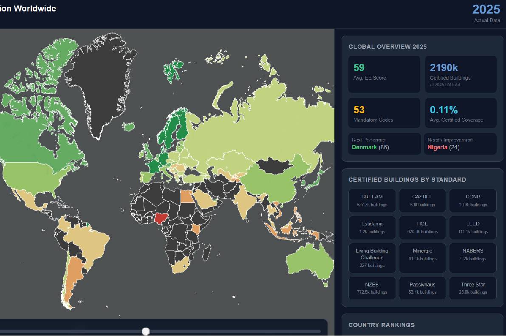

Pace of Energy Efficiency tracks and predicts the adoption density of building energy labels and ecological certifications worldwide.
By analyzing renovation rates and new construction standards, this application monitors how quickly global real estate is adapting to sustainable building practices.
It provides a comprehensive overview of regions leading the transition towards greener, more energy-efficient built environments.

Redirecting to the application in 15 seconds...